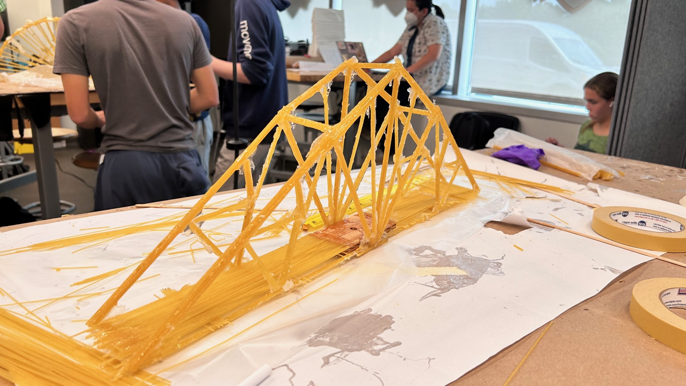
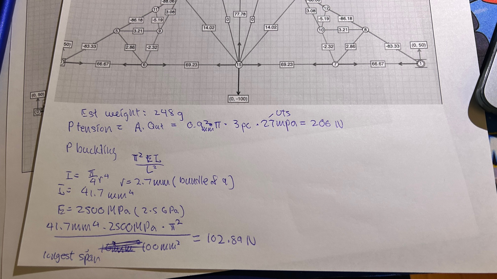
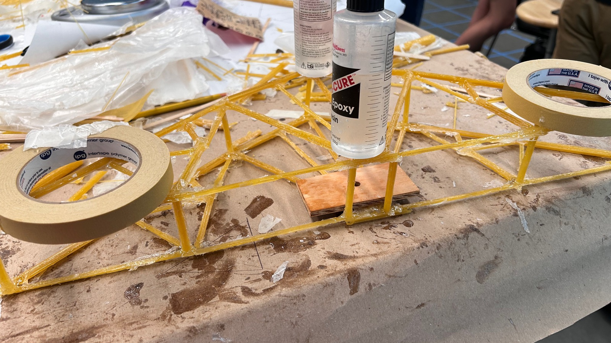
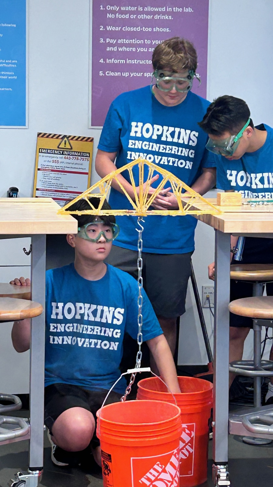

Spaghetti Bridge
A truss bridge built from spaghetti and epoxy under strict height and weight limits. It carried more load than any other entry that stayed within the constraints, placing 3rd overall.
- Held the highest load of any bridge that met the height and weight requirements
- Placed 3rd overall
- Bundled spaghetti into triangular tube sections to raise bending stiffness across the span
- Fully triangulated webbing keeps members in tension and compression rather than bending
Gallery


